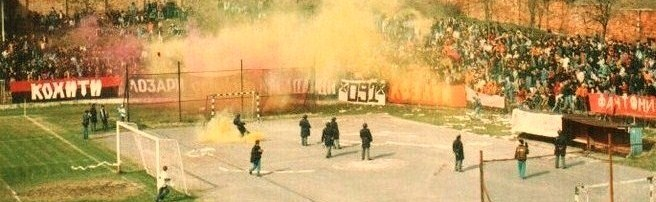

Тиквеш е основан на 21 декември 1930 година од група на млади ентузијасти кои одржале состанок во ресторанот Балкан во Кавадарци.
Славчо Темков станал првиот претседател на новоформираниот клуб, а Тодор Јанакиев бил избран за секретар.
Во раните години Тиквеш беше засенет од другите фудбалски клубови од Кавадарци, ФК Занаетчиски, ФК Љубаш и ФК Југославија,
но по Втората светска војна Тиквеш се етаблира и стана најголемиот и најпознат фудбалски клуб од регионот.

Лозари на Јужна трибина на дерби натпревар,
28 март 1993, Тиквеш 3-0 Пелистер.
Градски стадион, северна трибина.
Битката за пласман во Прва лига и агонијата во баражот
Во сезоната 2018–19 Тиквеш влезе со сериозна амбиција за промоција во Прва лига.
Но по несигурниот почеток шансата за директна промоција пропадна, па на крајот Тиквеш заврши како вицешампион
зад ФК Борец Велес, и успеа само да се квалификува во бараж разигрувањето. На 2 јуни 2019 година,
на натпревар одигран на стадионот Ѓорче Петров во Скопје, Тиквеш ја победи ФК Лабуништа со 6-3 во полуфиналето од
плејофот и се пласираше во финалето. Но, за жал, сонот за враќање на највисоко ниво пропадна на 5 јуни 2019 година.
Со само 3 дена за опоравување и со неколку повредени играчи Тиквеш го загуби финалето од ФК Силекс Кратово со резултат
3-2, оставајќи ги играчите и навивачите со скршени срца.
Фудбалерите на Тиквеш од Кавадарци за првпат по 17 години го обезбедија своето место во елитниот ранг на македонскиот фудбал
откако во плеј-офот го победија ФК Силекс Кратовo со резултат 1:0. Натпреварот се одржа на 25.05.2021 на стадионот
Национална Арена Тодор Проески.
Со влез на ФК Тиквеш во првата лига во 2021 година, фудбалерите и навивачите спектакуларно и незаборавно ја прославија оваа победа. Прослава која несомнено ќе се памети со децении. По победата играчите беа топло пречекани прво од градоначалникот на град Кавадарци кој безрезервно им ја даде цела своја поддршка. Се разбира тука беа и верните навивачи на единствениот фудбалски клуб во град Кавадарци. Сите сплотено се собраа на градскиот плоштад каде што имаше голема прослава. Со големи знамиња со логото на ФК Тиквеш, безброј знамиња со логото на навивачката група Лозари, запалени бакли, пиво, музика и многу забава.
На фотографиите подоле може да се види дел од прославата во градот Кавадарци. А се разбира мора да ги споменеме и навивачката група Лозари, кои верно до крај беа најголема поддршка на клубот. Без нив цело ова немаше да биде реалност.